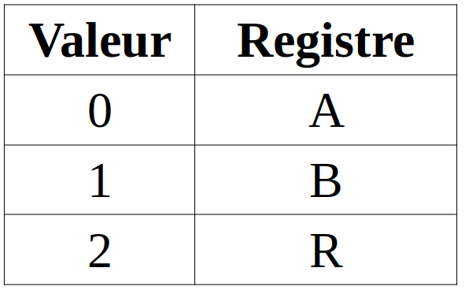

[^hist-info.org]: François GUILLIER. Histoire de l'informatique [en ligne]. 2016 [consulté le 18 juillet 2019]. histoire-informatique.org
[^hist-info.online]: Serge ROSSI. Histoire de l'informatique [en ligne]. 20 novembre 2004 [consulté le 18 juillet 2019]. histoire.info.online.fr
\huge \textbf{Thème 5}\normalsize
\
\Large \textbf{Chapitre 2 : Machine débranchée}\normalsize
Eléments du programme
 \ \
\ \
Un peu d'histoire [^hist-info.online] [^hist-info.org]
1904 : Invention du premier tube à vide, la diode par John Flemming.
1907 : Invention de la triode par Lee De Forest : mise au point à partir de la diode de J. Flemming, sur laquelle il rajoute une feuille métallique, "l'audion" qui s'appellera ensuite "triode" est un amplificateur d'intensité électrique. La première "lampe" réellement utilisable a été mise au point en France par H. Abraham et utilisée par l'ensemble des Alliés pendant la première guerre mondiale, d'où son nom : Lampe TM (pour Télégraphie Militaire).
1919 : Basculeur (flip-flop) de W. H. Eccles et F. W. Jordan : c'est un circuit électronique bistable, composé de deux triodes. Il faudra encore une quinzaine d'années avant que l'on s'aperçoive que ce circuit pouvait servir de base à l'utilisation électronique de l'algèbre de BOOLE.
1937 : George Stibitz crée le premier circuit binaire, un additionneur. Il l'appelle le Model K (pour Kitchen) car il l'a crée dans sa cuisine à partir d'une planche à pain !
1938 : Thèse de Shannon qui le premier fait le parallèle entre les circuits électriques et l'algèbre Booléenne. Il définit le chiffre binaire : bit (BInary digiT).
1939 : John Atanasoff et Clifford Berry réalisent un additionneur 16 bits binaire. Ce fût le premier calculateur à utiliser des tubes à vide.
1940 : Les composants devenant de plus en plus petits, on les fixe sur des petites plaquettes isolantes sur lesquelles ces composants sont reliés électriquement par des pistes métalliques très fines : le circuit imprimé est né !
1942 : Le germanium est un semi-conducteur, c'est à dire que "dopé" par des impuretés, il conduit dans un sens ou dans l'autre suivant la nature de cette impureté. Par l'association d'un morceau de germanium dopé positivement (P) et un morceau dopé négativement (N), on obtient une diode (Diodes au germanium) qui ne conduit le courant que dans un seul sens.
Décembre 1947 : Invention du transistor par William Bradford Shockley, Walter H. Brattain et John Bardeen dans les laboratoires de Bell Telephone.
1947 : Le transistor bipolaire à jonction par John Bardeen, Walter Brattain et William Shockley : il est constitué d'une très fine couche P entre deux couches N (ou bien l'inverse). Lorsque l'on fait circuler un faible courant entre une couche P et une couche N, un flux d'électrons entraîne une conduction entre les deux couches de même nature: c'est l'effet transistor. Ce composant est à l'origine d'une révolution dans l'électronique, en effet la faible énergie nécessaire pour le faire fonctionner, ainsi que sa petite taille rendent très vite les tubes obsolètes.
1959 : Premier Circuit intégré par Jack Kilby. Le principe consiste à fabriquer dans un même bloc de semi-conducteur (une puce) plusieurs composants (résistances, condensateurs, transistors). Cette idée sera reprise quelques mois plus tard par Robert Noyce qui intégrant la technologie planar mettra au point des procédés toujours utilisés aujourd'hui.
1965 : Gordon Moore écrit que la complexité des circuits intégrés doublera tous les ans. Cette affirmation qui s'est par la suite révélée exacte est maintenant connue sous le nom "Loi de Moore".
1970 : Première puce mémoire crée par Intel et contenant l'équivalent de 1024 tores de ferrite très encombrants sur un carré de 0.5 mm de côté (capacité : 1kBit soit 128 octets)
Novembre 1971 : Intel met en vente le premier microprocesseur conçu par Marcian Hoff. Il comporte 2 300 transistors et exécute 60 000 opérations par seconde à une fréquence de 108 Khz. Sa puissance était égale à celle de l'ENIAC.
Caractéristiques techniques du processeur Intel 4004 : Processeur 4 bits tournant à 108 KHz ; Permet d'adresser 640 octets de mémoire ; 60000 instructions par seconde ; 2300 transistors en technologie 10 microns ; Prix : 200 US $
2003 : Opteron d'AMD : alors que l'Itanium ne peux exécuter les applications 32 bits que grâce à un complexe système d'émulation, l'Opteron est le premier microprocesseur capable de supporter des programmes 32 bits et 64 bits à pleine vitesse. L'Opteron a également un contrôleur de mémoire intégré alors que traditionnellement, celui-ci est séparé. Même si à l'époque Windows n'était pas disponible en version 64 bits, le succès de ce processeur est immédiat, en particulier pour des serveurs Linux.
\newpage
2003 : Microprocesseur multi-coeur : le terme multi-coeur désigne un processeur composé d'au moins deux unité de calcul (ou coeurs) gravés sur la même puce. Ces processeurs sont apparus parce qu'augmenter simplement la vitesse devenait peut rentable et rendait problématique les problèmes de dissipation de chaleur. L'idée est d'obtenir plus de puissance apparente grâce à la parallélisation des tâches mais cela n'est vrai que si les applications sont conçues pour tirer partie de ce genre de configuration.
Petit rappel sur le modèle Von Neumann
 \ \
\ \
La machine M10io
Une première approche d'une machine au sens du modèle Von Neumann est la machine M10 :
 \ \
\ \
Présentation
Les constituants
La machine M10 est constituée de quatre éléments :
la mémoire, avec 10 espaces, nommés @0 à @9 ;- l'
Unité Arithmétiques et Logique(UAL) qui effectue des opérations ; - l'
accumulateurqui reçoit le résultat de l'opération effectuée par l'UAL ; - l'
unité de commanden'est pas représentée puisque c'est l'utilisateur qui fait office de.
En plus de ses constituants, la machine M10io dispose de périphériques d'entrée/sortie (I/O) tel un clavier (Input) et un écran (Output).
Les instructions arithmétiques et logiques traitées par l'UAL
L'UAL dispose d'opérations et de différents tests possibles. Toutes ces opérations prennent leurs opérandes en mémoire.
Les opérations
ADD@1 @2
Permet d'ajouter les valeurs contenues aux adresses @1 et @2.
SUB@1 @2
Permet de soustraire @2 à @1.
MUL@1 @2
Permet d'effectuer le produit de @1 par @2.
DIV@1 @2
Permet d'effectuer le quotient de @1 par @2.
Pour chacune de ces opérations, le résultat est alors transféré dans l'accumulateur. Il convient alors à l'unité de commande de transférer la valeur de l'accumulateur à l'endroit où il le souhaite (sortie ou mémoire).
Tests
\ \
En plus de ces opérations, des opérateurs de comparaisons existent :
LSS@1 @2
Retourne la valeur du test "@1 < @2"
EQU@1 @2
Retourne la valeur du test "@1 = @2"
NEQ@1 @2
Retourne la valeur du test "@1 <> @2"
LEQ@1 @2
Retourne la valeur du test "@1 <= @2"
GTR@1 @2
Retourne la valeur du test "@1 > @2"
GEQ@1 @2
Retourne la valeur du test "@1 >= @2"
Pour chacun de ces tests, le booléen est alors transféré dans l'accumulateur. Il convient alors à l'unité de commande de transférer la valeur de l'accumulateur à l'endroit où il le souhaite (sortie ou mémoire).
Gestion de la mémoire
La machine M10 gère également la gestion de la mémoire. Pour cela, elle dispose de deux instructions :
LOAD@1
Transfert la valeur de @1 vers l'accumulateur.
STORE@1
Transfert la valeur de l'accumulateur en mémoire @1.
Entrée/Sortie
Pour gérer les accès aux périphériques I/O, la machine dispose également de deux instructions :
READ
Lit la valeur saisie au clavier et la transfert vers l'accumulateur.
Transfert la valeur de l'accumulateur vers l'écran.
Exercices
Pour comprendre le fonctionnement
Au début du programme, les mémoires contient les valeurs suivantes :
@0 : 23 ; @1 : 65
0 : ADD @1 @2
1 : STORE @3
Qu'effectue ce programme ?
Un second déjà écrit
0 : READ
1 : STORE @0
2 : READ
3 : STORE @1
4 : MUL @0 @0
5 : STORE @2
6 : LSS @1 @2
7 : PRINT
Quel est le rôle de ce programme ?
Modifier un exercice
Reprendre le premier programme et le modifier pour que les deux valeurs ne soient plus stockées en @0 et @1 avant l'exécution mais soient récupérées en entrée et que le résultat soit transféré à l'écran.
Créer I
Il s'agit de programmer un "programme de calcul" sur M-10.
Par exemple :
choisir un nombre
soustraire 2 à ce nombre
multiplier le résultat par 4
Créer II
Ecrire un programme qui affiche à l'écran les coordonnées du sommet d'une parabole, les coefficients a, b et c du trinômes étant saisis au clavier.
Rappel : Le sommet de la parabole d'équation $y = ax^2 + bx + c$ a pour sommet le point $S \left(-\dfrac{b}{2a}~;~\dfrac{4ac - b^2}{4a^2}\right)$.
La machine M999a
La machine M10io est un premier pas vers ce à quoi ressemble une machine Von Neumann, mais il faut savoir que programme et valeurs sont tous stockés dans la même mémoire (RAM).
De plus, une machine dispose de mémoires à accès très rapide (registres), ainsi que d'autres éléments importants pour le bon déroulement d'un programme.
Pour tenir compte de cela, la machine M999a va nous permettre de mieux appréhender ce concept :
 \ \
\ \
Présentation
Les constituants
Le fonctionnement du processeur M999 est caractéristique des architectures dites von Neumann.
Afin de faciliter son usage, les valeurs seront des nombres décimaux, même si en théorie, il ne s'agit que de nombres écrits en binaire.
M999 est constitué :
- d'une mémoire qui contient à la fois les données et le programme ;
- d'une unité arithmétique et logique - UAL, ALU en anglais - en charge de réaliser les opérations telles addition, comparaison... ;
- d'une unité de commande - ou unité de contrôle - qui pilote l'ordinateur ;
- de dispositifs d'entrée-sortie.
Mémoire et registres
La mémoire est composée de 100 mots mémoire de 3 chiffres (valeur de 000 à 999). Ces 100 mots mémoire sont adressables par des adresses
codées sur 2 chiffres.
Cette mémoire va contenir données et instructions.
Le processeur dispose de deux registres généraux A et B (ce seront les opérandes des instructions), et d'un registre accumulateur/résultat R.
Comme la mémoire, ces registres sont de 3 chiffres, et contiennent donc des valeurs entre 0 et 999.
Le processeur dispose aussi d'un registre pointeur d'instruction PC (Point Counter) contenant l'adresse mémoire de la prochaine instruction à exécuter.
Unité arithmétique et logique
L'unité arithmétique et logique est en charge d'effectuer les calculs. Les opérandes et résultats sont dans les registres, A et B pour les opérandes, R pour le résultat.
Unité de commande
L'unité de commande pilote l'ordinateur.
Son cycle de fonctionnement comporte 3 étapes :
- charger l'instruction depuis la mémoire pointée par PC. Incrémenter PC.
- décoder l'instruction : à partir des 3 chiffres codant l'instruction, identifier quelle est l'opération à réaliser, quelles sont les opérandes.
- exécuter l'instruction.
Jeu d'instructions
 \ \
\ \
Les registres sont désignés par les valeurs suivantes :
\ \
Boot et arrêt
\ \
La machine démarre avec la valeur nulle comme pointeur d'instruction.
La machine stoppe si le pointeur d'instruction vaut 99.
On peut donc utiliser le mnémonique HLT comme synonyme de JMP 99.
Entrées/sorties
\ \
Les entrées/sorties sont "mappées" en mémoire. Cela signifie qu'elle sont accessible via une adresse en mémoire.
Écrire le mot mémoire 99 écrit sur le terminal.
Les valeurs saisies sur le terminal seront lues dans le mot mémoire 99.
Par exemple :
299 - STR 99
Ecrit la valeur du registre R au mot mémoire 99, autrement dit, transfert le contenu du registre R vers l'écran.
Exécuter des programmes
Un premier pas
Soit l'état suivant de la mémoire :
00 01 02 ...
+-----+-----+---
0 | 099 | ... | ...
+-----+-----+---
1 | 199 | ... | ...
+-----+-----+---
2 | 300 | ... | ...
+-----+-----+---
3 | 299 | ... | ...
+-----+-----+---
4 | 599 | ... | ...
+-----+-----+---
5 | ... | ... | ...
+-----+-----+---
6 | ... | ... | ...
+-----+-----+---
7 | ... | ... | ...
+-----+-----+---
8 | ... | ... | ...
+-----+-----+---
9 | ... | ... | ...
+-----+-----+---
Que provoque la mise en route de la machine ?
Conseil : Ecrire d'abord les mnémoniques correspondants puis exécuter le programme.
Un second ?
Soit l'état suivant de la mémoire :
00 01 02 ...
+-----+-----+---
0 | 019 | 301 | ...
+-----+-----+---
1 | 116 | 500 | ...
+-----+-----+---
2 | 300 | 018 | ...
+-----+-----+---
3 | 219 | 402 | ...
+-----+-----+---
4 | 018 | 299 | ...
+-----+-----+---
5 | 119 | 399 | ...
+-----+-----+---
6 | 300 | 001 | ...
+-----+-----+---
7 | 218 | 005 | ...
+-----+-----+---
8 | 017 | 000 | ...
+-----+-----+---
9 | 119 | 000 | ...
+-----+-----+---
Que provoque la mise en route de la machine ?
A votre tour !
Écrire un programme M999 qui affiche le minimum de 2 entiers saisis au clavier.
Indications :
- écrire le programme en langage naturel ;
- écrire le programme en langage M999 (mnémoniques) ;
- écrire le programme en langage M999 (mots de trois chiffres).
Demander le produit
Écrire un programme M999 de calcul du produit de deux entiers (on ne dispose pas de l'opération de multiplication).
On pourra procéder par étape :
- proposer une écriture dans un langage de "haut niveau" ad hoc ;
- traduire en mnémonique M999
- sans se soucier des valeurs des adresses des variables et constantes - que l'on notera par exemple
@aou@1- ; - sans se soucier des adresses des instructions - on utilisera par exemple des labels notés
label:- ;
- sans se soucier des valeurs des adresses des variables et constantes - que l'on notera par exemple
- allocation des variables, identification des numéro des instructions ;
- étape finale de traduction en mot de trois chiffres.
Carré et plus si affinités
Comment définir un code du calcul du carré d'un entier utilisant le code de calcul du produit ?
Ecrire ce code !
Un peu (ou beaucoup) plus loin ...
Savoir d'où l'on vient pour aller où l'on veut
Problématique :
Comment définir maintenant un code du calcul du cube d'un entier utilisant le code de calcul du produit et du carré ?
Deux utilisations distinctes, deux "appels" seront fait au code de calcul du produit : l'un pour le carré, l'autre pour le cube. La nécessité de pouvoir reprendre l'exécution à la suite de l'instruction "appelante" est obligatoire.
Pour cela,
- on utilisera le registre SP (
Stack Pointer) : le registre SP contient une adresse mémoire. Il est initialisé à 98. - on devra introduire deux nouvelles instructions :
CALetRETcodées ainsi :
 \ \
\ \
A noter que l'exécution de CAL comme de toutes les instructions, est réalisée après que la valeur de PC ait été incrémentée.
CAL permet ainsi de brancher l'exécution à une adresse donnée, alors que RET permet de reprendre l'exécution à la suite de l'instruction qui a réalisée le branchement.
Exercice :
En utilisant ces nouvelles instructions, écrire un code d'une procédure permettant le calcul du cube d'un nombre entier.
Ajouter des paramètres à une procédure, ça devient une fonction
Afin de réaliser plus simplement et plus efficacement des appels de fonctions paramétrées, on étend le jeu d'instruction pour permettre :
- d'empiler/dépiler - push/pop - une valeur sur la pile pointée par SP, mnémoniques
PSHetPOP; - d'accéder - get SP, set SP - à des mots mémoire d'adresse relative à SP, mnémoniques
GSPetSSP.
 \ \
\ \
Exercice :
Définir une fonction produit (à deux paramètres), une fonction carré (à un paramètre), et un programme qui affiche le carré d'un entier saisi au clavier.
Pages web
Deux pages web qui simulent les type de machines étudiées précédemment écrites par Peter HIGGINSON :
- Little Man Computer : https://peterhigginson.co.uk/lmc/
- https://www.peterhigginson.co.uk/AQA/ et sa documentation https://www.peterhigginson.co.uk/AQA/info.html
Chaîne de compilation
.
 \ \
\ \
\
\
\
Sources
- Philippe Marquet, Martin Quinson. M999, le processeur débranché.
http://github.com/InfoSansOrdi/M999 - Département informatique, Univ. Lille - DIU Enseigner l'informatique au lycée. M999 - une architecture von Neumann.
http://gitlab-fil.univ-lille.fr/diu-eil-lil/portail/blob/master/bloc3/archi/m999.md